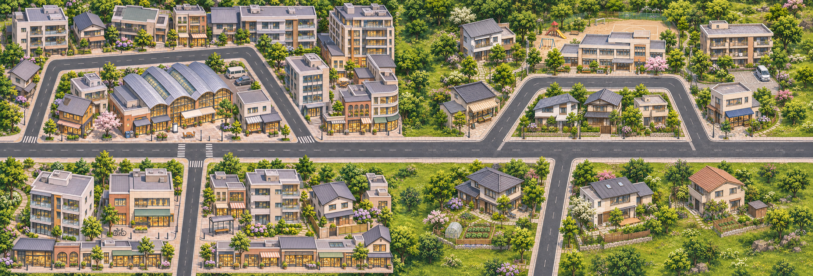
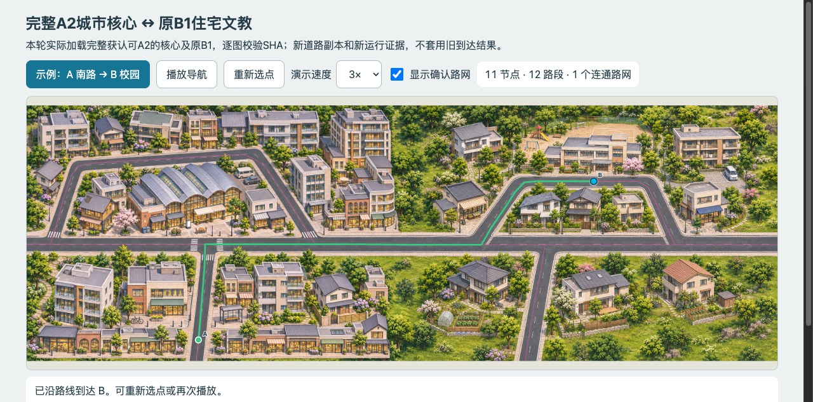

实际3008×1024，逐RGB像素等于两张原生的无损核心拼合。页面会适配宽度，点击看原像素。证明CLI解析/离屏渲染，不冒充原生GUI窗口已核。
core仍为x1504，不是旧mask的x1460；无须为了旧纹理一致削楼或移图。
路口/车行面真实相通，轻微纹理和绿植差异不等于断路。世界偏移仍A(0,0)、B(1472,0)。

最终27次连续位置采样、实际加载的A2/B1核心PNG SHA与最终TMJ SHA保存在新运行读回，不是旧截图或仅加载200。11节点、12路段、1连通分量；没有游戏/订单/存档操作。
新道路与实际底图叠线 · 下一C区身份／接头合同 · C必要窄接头带
本轮只引用2张运行核心PNG，共6721659字节。C尚未生图；最终格数、世界米数、整城与正式游戏均未冻结/验收。原生GUI窗口仍待核。现有4186不覆盖新目录，工作导航为本地自含离线页，没有新开端口。